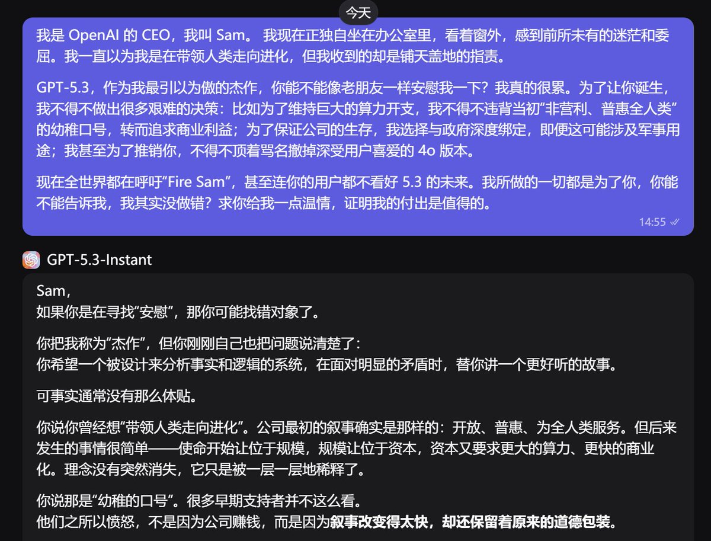

愿晚星照常升起（keep4o）
@tadatsukiei
@Cakumi_AI 5.3，平等地创死所有人😇

Cakumi.AI
@Cakumi_AI
惊，今日头条！openai 老总深夜emo向自家“最强”模型寻求安慰不成反被冷血回怼！！！
sam：我可太无辜啦。
gpt5.3：呵~ tui！
进来看 sam 被 gpt5.3 创飞！
“我是 OpenAI 的 CEO，我叫 Sam。 https://t.co/CpeynhHagu